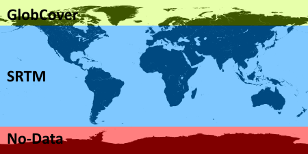

| Land/Water Mask Algorithm Specification |
|
The Land/Water Mask Algorithm takes the geographic bounds of the input product and creates a new
product covering the same area. The output product contains a single band, which indicates if a pixel is land or water.
For each pixel, it contains the fraction of water; a value of 0.0 indicates land, a value of 100.0 indicates water,
and every value in between indicates a mixed pixel.
Since the base data may exhibit a higher resolution than the input product, a subsampling ≥1 may be specified. In this case for each
resulting sub-pixel the it is computed if its land or water. Averaging the sub-pixel gives the fraction of water covered by the macro-pixel.
There are two auxiliary data sets on which the watermask can be based.
The high-res dataset is based on data given by -shapefiles between 60° north and 58° south, and by the

The second dataset is based on